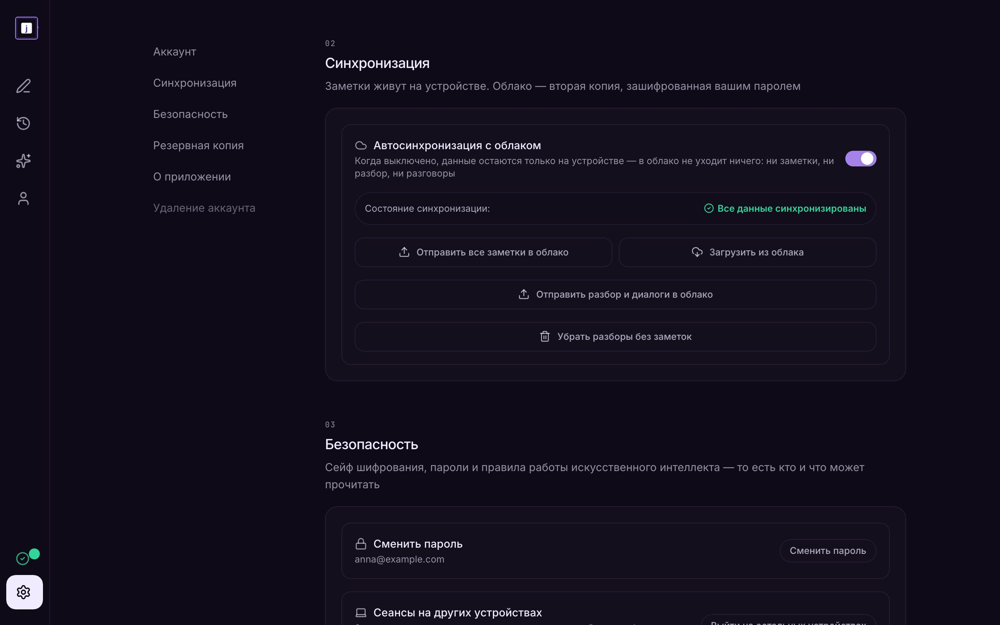
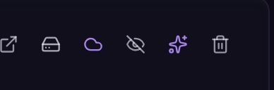

Облако и устройства
Заметки живут в браузере на вашем устройстве, а облако хранит их вторую, зашифрованную копию. Здесь — как это устроено, что значат значки и как открыть свои записи на другом компьютере.
Где хранятся заметки
Всё, что вы пишете, сначала сохраняется в браузере на этом устройстве. Поэтому приложение работает быстро и не теряет текст, даже когда пропадает интернет.
Если вы вошли в аккаунт, у заметок может быть вторая копия в облаке. Она зашифрована вашим паролем (подробнее — в разделе Пароли и шифрование). Облако нужно, чтобы записи не пропали вместе с браузером и чтобы их можно было открыть на другом компьютере.
Без входа в аккаунт (в гостевом режиме) заметки хранятся только в этом браузере. Облака у гостя нет: в Настройки → Синхронизация вместо переключателя будет надпись Войди, чтобы сохранять в облако и кнопка Войти для облака.
Автосинхронизация
Переключатель находится в Настройки → Синхронизация → Автосинхронизация с облаком. По умолчанию он выключен: пока вы сами его не включите (здесь или в окне «Синхронизация с облаком»), в облако ничего не уходит. Настройка своя для каждого браузера: включив её на ноутбуке, вы не включите её на рабочем компьютере.

Окно «Синхронизация с облаком»
Если на устройстве уже есть заметки, после входа приложение один раз спросит, включить ли синхронизацию. Нажмите Включить синхронизацию или Оставить выключенной. Выбор можно поменять в любой момент в настройках.
Когда синхронизация срабатывает сама
Когда автосинхронизация включена, приложение само сверяется с облаком и подтягивает новые заметки с других устройств:
- когда вы входите в аккаунт;
- когда возвращается интернет;
- когда вы возвращаетесь на вкладку с приложением;
- когда вы открываете сейф паролем.
Кроме заметок, с включённой автосинхронизацией в облако уходят черновики, разбор ИИ, диалоги с ним и ваш портрет. Разборы и диалоги, сделанные на другом устройстве, приезжают сами в течение нескольких минут: приложение проверяет облако примерно раз в две минуты.
Когда она выключена
Сами по себе в облако не уходят ни заметки, ни черновики, ни разбор ИИ, ни диалоги, ни портрет — ни сразу, ни позже, когда появится сеть. При сохранении вы увидите Заметка сохранена на этом устройстве. Если позже включить автосинхронизацию, такие заметки уйдут в облако.
Отправить вручную можно в любой момент: кнопки Отправить все заметки в облако и Отправить разбор и диалоги в облако работают и при выключенной автосинхронизации. Приложение само не подтягивает заметки с других устройств.
Исключение — метки: это настройка аккаунта, она хранится в облачном профиле в зашифрованном виде даже при выключенной синхронизации.
Сообщение «Сохранено на этом устройстве — в облако отправится позже» бывает только при включённой автосинхронизации: отправить сразу не вышло (нет сети или сейф заперт), заметка встала в очередь и уйдёт сама.
Состояние синхронизации
В разделе Синхронизация есть строка Состояние синхронизации:. Она честно говорит, всё ли уже лежит в облаке.
| Что написано | Что это значит и что делать |
|---|---|
| Все данные синхронизированы | Всё, что есть на устройстве, есть и в облаке. Делать ничего не нужно. |
| Синхронизация приостановлена (нет сети) | Нет интернета. Пишите дальше — всё сохраняется на устройстве. Если автосинхронизация включена, всё уйдёт в облако, когда сеть вернётся. |
| «Синхронизация приостановлена (облако недоступно)» | Интернет есть, но облако не отвечает. Подождите немного и откройте настройки снова. |
| N заметок ждут отправки | Заметки стоят в очереди и не ушли за полминуты. Проверьте, открыт ли сейф, и нажмите Отправить все заметки в облако. |
| Не синхронизировано заметок: N | У части заметок нет облачной копии или она отстала. Нажмите Отправить все заметки в облако. |
| «Всё есть в облаке, но автоотправка выключена — новое туда само не поедет» | Сейчас в облаке всё, но автосинхронизация выключена. Включите её, если хотите, чтобы заметки с других устройств подтягивались сами. |
Под основной строкой бывают уточнения:
- Облачная копия отстаёт: N — на устройстве есть правки, которых ещё нет в облаке;
- Не привязано к облаку: N — у этих заметок облачной копии нет совсем;
- Только на этом устройстве (по выбору): N — заметки, у которых вы сами удалили облачную копию, и слишком большие для облака;
- N удалений ожидают удаления из облака — удалённые заметки ещё не стёрты в облаке, это произойдёт при следующей связи;
- Ошибки синхронизации (задачи в карантине): N — какие-то заметки не удалось отправить много раз подряд. Рядом есть кнопка Повторить.
Кнопки в настройках
«Отправить все заметки в облако»
Отправляет в облако заметки, у которых ещё нет облачной копии или она отстала, и заодно скачивает из облака те, которых нет на этом устройстве. Если что-то не отправлено, в скобках на кнопке указано сколько. Когда всё закончится, появится Синхронизировано: N заметок. Если часть не ушла — Не удалось отправить: N заметок.
Если сейф заперт, приложение напишет: «Сейф заперт. Откройте сейф, чтобы загрузить заметки из облака.»
«Загрузить из облака»
Открывает окно загрузки из облака — то же, что появляется на новом устройстве. Как с ним работать, описано ниже, в разделе Второе устройство.
«Повторить»
Появляется рядом со строкой Ошибки синхронизации (задачи в карантине). Нажмите её, когда проблема, скорее всего, ушла: вернулась сеть, открыт сейф. Приложение попробует отправить эти заметки ещё раз.
Кнопки Отправить разбор и диалоги в облако и Убрать разборы без заметок относятся к ИИ — о нём в разделе ИИ-собеседник и разбор.
Иконки хранения у заметки
На странице Заметки у каждой заметки есть иконки хранения: диск (устройство) и облако, рядом с ними — перечёркнутый глаз («скрыто от ИИ») и искорки («разобрано ИИ»). В виде Список они стоят справа в строке, в виде Сетка — те же иконки в подвале карточки. По ним видно, где лежит заметка, а щелчок по ним добавляет или убирает копию; горящая иконка — цветом темы (в стандартной теме — фиолетовым), ждущая отправки — жёлтая со свечением. На телефоне в строке списка этих иконок нет: те же действия — в меню «⋮».

Диск — копия на устройстве
| Как выглядит | Подсказка | Что будет по щелчку |
|---|---|---|
| Фиолетовая, заметка есть и в облаке | Копия на устройстве · Удалить локальную копию | Спросит Удалить локальную копию? Заметка исчезнет с устройства, останется только облачная версия. |
| Фиолетовая, заметка только на устройстве | Копия на устройстве · Удалить локальную копию | Спросит Переместить документ в корзину? Заметка уйдёт в корзину и пролежит там 10 дней. |
| Серая, заметка только в облаке | Копии на устройстве нет · Скачать на это устройство | Спросит Скачать на это устройство? После Скачать текст загрузится из облака. Если сейф заперт, сначала попросит пароль. |
| Серая, не нажимается | Нет локальной копии | Ничего. |
Облако — копия в облаке
| Как выглядит | Подсказка | Что будет по щелчку |
|---|---|---|
| Фиолетовая | Копия в облаке · Удалить облачную копию | Спросит Удалить облачную копию? Заметка останется только на этом устройстве. Если копии на устройстве нет, заметка уйдёт в корзину. |
| Жёлтая, с подсветкой | «Есть неотправленные изменения (кликни для отправки)» | Отправит свежие правки в облако. Итог — Загружено в облако или сообщение об ошибке. |
| Серая | Копии в облаке нет · Загрузить на облако | Отправит заметку в облако. Если сейф заперт, сначала попросит пароль. Если сейфа ещё нет, предложит его создать. |
| Бледная | «Только локально: слишком большая для облака (лимит ≈ 700 000 символов)» | Покажет предупреждение. Такая заметка живёт только на устройстве, см. Слишком большие заметки. |
| Серая, не нажимается | Нет облачной копии | Ничего. Так бывает, например, у гостя. |
Ещё две иконки в этом ряду — перечёркнутый глаз и искорки — относятся к ИИ, о них в разделе ИИ-собеседник и разбор.
Значок в меню слева
Когда есть что-то неотправленное или нет связи с облаком, внизу меню слева появляется мигающий значок облака с чертой. Наведите на него, чтобы прочитать подсказку, или нажмите — откроются Настройки, где в разделе Синхронизация видно, что происходит. Когда всё отправлено, значок пропадает.
Нет сети
Если пропал интернет, на экране появится плашка Нет соединения — работаем локально. Можно спокойно писать и сохранять: всё остаётся на устройстве. Когда сеть вернётся, приложение само отправит в облако то, что накопилось в очереди, — если включена автосинхронизация.
Без сети не получится открыть заметку, текст которой лежит только в облаке, — приложение скажет «Действие недоступно без сети. Текст заметки лежит в облаке.»
Второе устройство
Чтобы увидеть свои заметки на другом компьютере или в другом браузере:
- Откройте приложение и войдите в тот же аккаунт.
- Откройте сейф: в окне Разблокировать шифрование введите пароль от аккаунта. Как это работает — в разделе Разблокировка.
- Если в облаке заметок больше, чем на этом устройстве, появится окно загрузки из облака. Оно скажет, сколько записей найдено в облаке.
- Отметьте, что загрузить: Заметки и история версий, Разбор ИИ и поиск, Личность, диалоги и история жизни.
- Нажмите Начать загрузку. Пока идёт загрузка, не закрывайте вкладку.
- В конце появится Данные успешно загружены и число загруженного. Приложение предложит включить автосинхронизацию на этом устройстве: Включить автосинк или Оставить ручную.
Если нажать Не сейчас, окно больше не появится само. Его всегда можно открыть снова кнопкой Загрузить из облака в Настройки → Синхронизация.
Если загрузка сорвалась, окно покажет Восстановление не удалось и кнопку Повторить.
Конфликт правок
Бывает, что одну и ту же заметку правили на двух устройствах, и облачная версия успела уйти вперёд. Тогда приложение ничего не перезаписывает. Ваша версия сохраняется отдельной заметкой, и появляется сообщение «В облаке уже была более новая версия. Ваша сохранена отдельно: „…“».
У копии в названии будет пометка «конфликт», дата, время и начало текста. Сравните две заметки, перенесите нужное в одну и удалите лишнюю.
Данные предыдущего пользователя
Если на этом компьютере раньше работал кто-то другой со своим аккаунтом, после вашего входа может появиться окно Данные предыдущего пользователя. Чужие записи не видны среди ваших заметок, они просто лежат в браузере.
- Очистить чужие данные — удалить их с этого устройства и освободить место;
- Оставить — ничего не трогать. Пока открыта эта вкладка, окно больше не появится.
Прежде чем очищать, убедитесь, что это правда чужие данные, а не ваш второй аккаунт.
Слишком большие заметки
В облако не помещается заметка длиннее примерно 700 000 символов. Такая заметка сохраняется только на этом устройстве, и приложение предупредит: «Заметка сохранена только на этом устройстве: слишком большая для облака (лимит ≈ 700 000 символов). Разбейте её на части».
В списке у неё будет пометка «только локально» и бледная иконка облака. Чтобы у текста появилась облачная копия, разделите его на несколько заметок покороче.